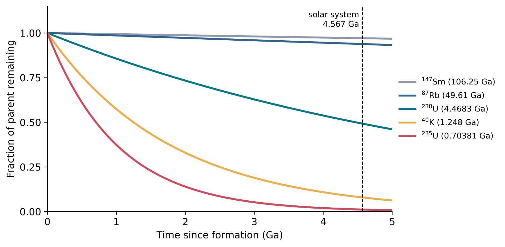
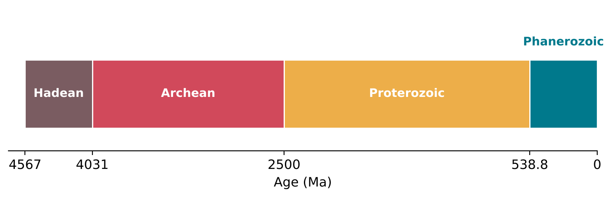
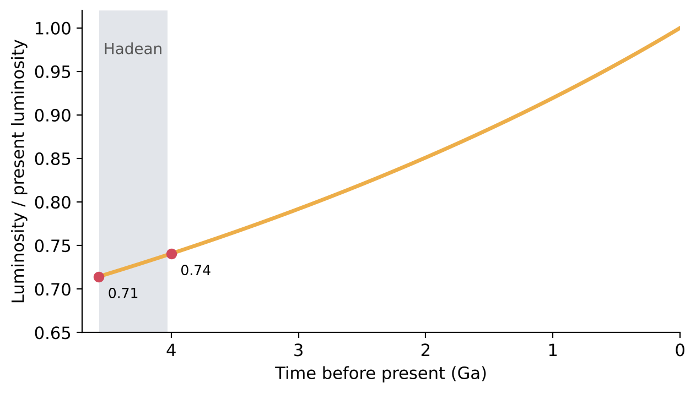
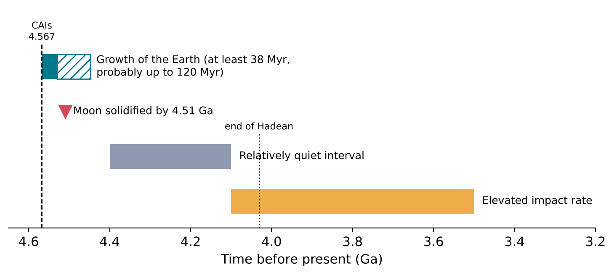
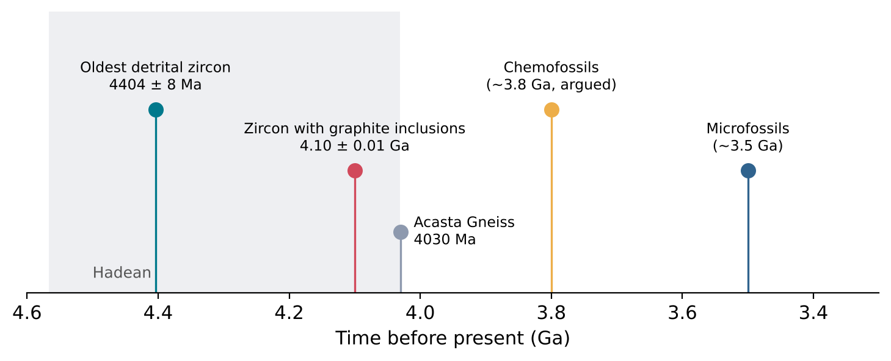
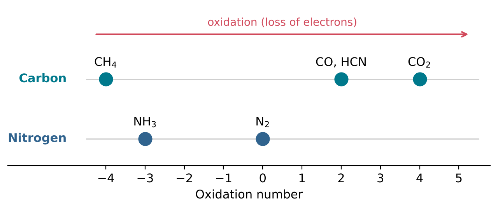
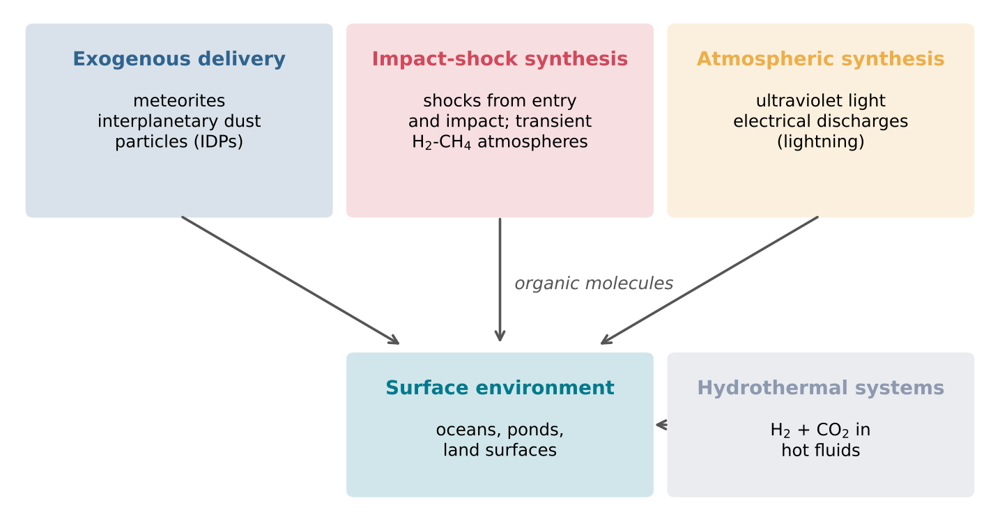
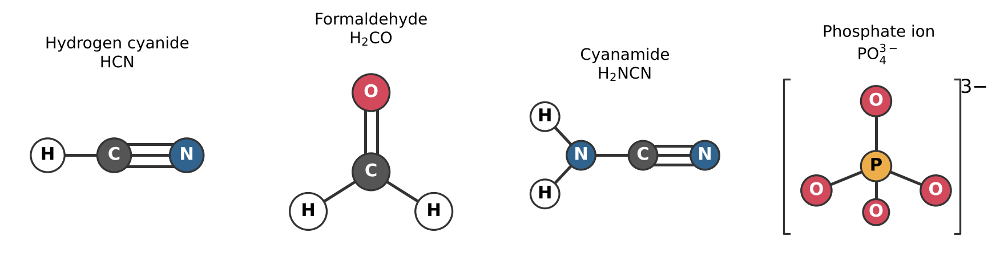

3 Feedstock on the Early Earth
Learning objectives
After reading this chapter you should be able to:
- Explain how radioactive decay is used to measure the ages of rocks and meteorites, and calculate an age from a measured ratio of daughter to parent atoms.
- Describe the formation of the Earth and the Moon and the evidence for liquid water on the Earth during the Hadean eon.
- Compare the models proposed for the early atmosphere, and explain why its composition matters for the synthesis of organic molecules.
- Identify the main sources of small organic molecules on the early Earth, the key feedstock molecules of prebiotic chemistry, and the settings in which they may have accumulated.
3.1 Geological time and radiometric dating
The problem of measuring deep time
Chapter 1 gave the age of the oldest solids in the solar system as 4.567 to 4.568 billion years (Section 1.7). No observer was present to record this, and no physical record of a calendar survives. Ages of this kind are obtained from the decay of radioactive isotopes, which acts as a clock built into the minerals themselves. This section explains how such a clock works, which isotopes are used, and how the age of the Earth was determined.
Geological ages are expressed in years before the present. The year used in science is the annum (symbol a), and multiples are written with the usual SI prefixes: 1 ka = 103 a, 1 Ma = 106 a (a million years) and 1 Ga = 109 a (a billion years). These are the units used, for example, in the joint recommendations of IUPAC and IUGS on half-lives (Villa et al. 2022). Thus 4.567 Ga means 4.567 billion years ago.
The law of radioactive decay
Radioactive decay was introduced in Section 1.1 as the spontaneous transformation of an unstable nucleus. The decay of an individual nucleus is a random event: it is impossible to predict when a given nucleus will decay. For a large number of identical nuclei, however, the number that decay in a short time interval is proportional to the number present. This is expressed by the equation
\[ \frac{\mathrm{d}N}{\mathrm{d}t} = -\lambda N , \tag{3.1}\]
where N is the number of radioactive nuclei at time t, dN/dt is the rate at which this number changes, and \(\lambda\) is the decay constant, the probability per unit time that a nucleus decays. The decay constant is a property of the nuclide; it is not measurably affected by temperature, pressure or chemical bonding under geological conditions, which is why radioactive decay can serve as a clock. The minus sign indicates that N decreases.
The solution of Equation 3.1 is
\[ N = N_0\, \mathrm{e}^{-\lambda t} , \tag{3.2}\]
where N0 is the number of radioactive nuclei at t = 0 and e = 2.718… is the base of natural logarithms. The half-life, t1/2, is the time after which half of the original nuclei remain. Setting N = N0/2 in Equation 3.2 gives
\[ t_{1/2} = \frac{\ln 2}{\lambda} \approx \frac{0.693}{\lambda} . \tag{3.3}\]
After one half-life a fraction 1/2 of the original nuclei remains, after two half-lives 1/4, and after n half-lives (1/2)n. The decay curve has the same shape for every radioactive nuclide; only the time scale differs (Figure 3.1).
Parent, daughter and age
The decaying nuclide is called the parent and the nuclide it decays into the daughter. If a mineral contained N0 parent atoms and no daughter atoms when it formed, and if no atoms of either have entered or left it since, the number of daughter atoms produced by decay, D*, equals the number of parent atoms that have decayed:
\[ D^{*} = N_0 - N = N\left(\mathrm{e}^{\lambda t} - 1\right) , \tag{3.4}\]
where the second form follows from Equation 3.2 by writing N0 = N e\(\lambda t\). Solving for t gives the radiometric age:
\[ t = \frac{1}{\lambda} \ln\left(1 + \frac{D^{*}}{N}\right) . \tag{3.5}\]
The advantage of Equation 3.5 is that it requires only the present ratio of daughter to parent atoms, D*/N, which can be measured with a mass spectrometer, and the decay constant. The original number of parent atoms need not be known. For example, when D*/N = 1, half of the parent has decayed, and t = ln 2/\(\lambda\) = t1/2.
Equation 3.5 rests on two assumptions, and much of the practice of geochronology consists of testing them.
- Closed system. No parent or daughter atoms have been added to or removed from the sample since the time being dated. Heating, chemical alteration or the action of water can break this condition.
- Known initial daughter. The daughter atoms measured must be corrected for any that were present when the mineral formed. D* in Equation 3.5 is the radiogenic part only, that is, the part produced by decay within the sample.
The event that a radiometric age records is the moment at which the clock was set: usually the crystallisation of a mineral, after which parent and daughter atoms could no longer move freely in or out of it.
Radioactive systems used for dating
To measure an age with good precision, a parent must be chosen whose half-life is not much shorter than the age to be measured; otherwise too little parent would remain. Carbon-14, with a half-life of 5,730 years (IUPAC Commission on Isotopic Abundances and Atomic Weights, n.d.), is useful for archaeological samples but not for the early Earth: 4 billion years correspond to about 700 000 half-lives, after which no carbon-14 atom of the original material would remain. The systems used for ancient rocks and meteorites have half-lives of hundreds of millions to tens of billions of years (Table 3.1).
| Parent | Daughter | Half-life | Source |
|---|---|---|---|
| 238U | 206Pb | (4.4683 ± 0.0096) Ga | Villa et al. (2022) |
| 235U | 207Pb | (703.81 ± 1.92) Ma | measurement of 1971, as reported by Villa et al. (2022) |
| 40K | 40Ar (10.72 %), 40Ca (89.28 %) | 1.248 Ga | Ruedas (2017) |
| 87Rb | 87Sr | (49.61 ± 0.16) Ga | Villa et al. (2015) |
| 147Sm | 143Nd | (106.25 ± 0.38) Ga | Villa et al. (2022) |
The decay constants follow from Equation 3.3. For uranium-238, \(\lambda\) = ln 2/(4.4683 × 109 a) = 1.551 25 × 10−10 a−1, the value recommended by the International Union of Pure and Applied Chemistry (IUPAC) and the International Union of Geological Sciences (IUGS) (Villa et al. 2022). For uranium-235, \(\lambda\) = 9.8485 × 10−10 a−1.
Uranium-238 and uranium-235 do not decay directly to lead. Each starts a chain of alpha and beta decays through a series of shorter-lived intermediate nuclides; the chains end at the stable isotopes lead-206 and lead-207 respectively. Because the intermediate nuclides have half-lives very much shorter than those of the parents, each chain behaves, on time scales of millions of years and longer, as a single decay from uranium to lead with the half-life of the parent.
Two clocks in one mineral
The uranium-lead system is the most widely used for the oldest materials because a uranium-bearing mineral contains two independent clocks. Applying Equation 3.5 separately to the pairs 238U-206Pb and 235U-207Pb gives two ages. If the mineral has remained a closed system, the two ages agree, and such an age is called concordant. If lead has been lost, the two ages disagree, and the disagreement itself reveals that the closed-system assumption has failed.
The two parents decay at very different rates. Over the age of the solar system, 4.567 Ga, Equation 3.2 shows that 49 percent of the original uranium-238 survives, but only 1.1 percent of the uranium-235 (Figure 3.1). The ratio of radiogenic lead-207 to radiogenic lead-206 therefore changes with time in a known way. It depends only on the age and on the present ratio of the two uranium isotopes, which is nearly the same in all natural materials, and not on the amount of uranium in the sample. The age obtained from this ratio is called a lead-lead age. This is the method by which the CAIs of Chapter 1 were dated to 4.567 to 4.568 Ga (Pfalzner et al. 2015).

In 1956 Clair Patterson published an age of 4.55 ± 0.07 billion years for the Earth and for meteorites, obtained from the isotopic composition of lead (Patterson 1956). The rocks of the Earth’s surface have been melted and reworked many times, so no rock survives from the time of the Earth’s formation. Patterson’s approach was to assume that the Earth and meteorites formed at the same time from material with the same initial isotopic composition of lead, so that an age measured on meteorites would also be the age of the Earth.
The key sample was lead from the iron meteorite Canyon Diablo, which contains the iron sulfide mineral troilite (FeS) as well as iron-nickel metal and silicate minerals (Patterson 1956). Lead is concentrated in sulfide minerals, whereas uranium is not, so the lead in troilite has received very little radiogenic lead since the meteorite formed; it records the isotopic composition of lead at the beginning of the solar system. Meteorites with more uranium contain lead enriched in the radiogenic isotopes 206Pb and 207Pb. Comparing the two kinds of lead with the decay of uranium-238 and uranium-235 gives the time elapsed since they shared a common composition.
The value obtained, 4.55 billion years, is close to the lead-lead ages of CAIs, 4.567 to 4.568 Ga (Pfalzner et al. 2015). As described in Section 1.7, the Earth itself grew over the first tens of millions of years after CAI formation, so its age is a few tens of millions of years less than that of the solar system.
The geological time scale
The history of the Earth is divided into units of time. The largest are eons, which are subdivided into eras, periods and smaller units. The boundaries of these units are defined by the International Commission on Stratigraphy (ICS), which assigns them numerical ages in the International Chronostratigraphic Chart (Cohen et al. 2024). The four eons are listed in Table 3.2 and shown in Figure 3.2.
| Eon | Begins (Ma) | Ends (Ma) |
|---|---|---|
| Hadean | about 4567 | 4031 ± 3 |
| Archean | 4031 ± 3 | 2500 |
| Proterozoic | 2500 | 538.8 ± 0.6 |
| Phanerozoic | 538.8 ± 0.6 | present |
The Hadean eon is the first part of Earth history, from the formation of the solar system to 4031 ± 3 Ma (Cohen et al. 2024). It is followed by the Archean eon, which lasted until 2500 Ma. The events of interest to this book, the formation of the oceans and atmosphere and the chemistry that preceded life, belong to the Hadean and the early Archean. These eons are also those for which the geological record is least complete, which is why the evidence considered in the rest of this chapter comes largely from single mineral grains, from meteorites, and from models.

3.2 The formation of the Earth and Moon; the Hadean eon
The Earth and its Moon
The Earth is the largest of the four rocky planets of the solar system. Its mass is 5.9722 × 1024 kg, its mean radius 6371 km and its mean density 5513 kg m−3 (NASA Space Science Data Coordinated Archive 2024a). As described in Section 1.7, it grew by the collision and merging of smaller bodies over at least 38 million years, and probably as long as 120 million years, after the formation of the first solids (Pfalzner et al. 2015).
The Moon is unusually large in relation to its planet. Its mass is 7.346 × 1022 kg, 1.23 percent of the mass of the Earth, and its mean radius is 1737.4 km, 27 percent of the Earth’s (NASA Space Science Data Coordinated Archive 2024b). Its mean density, 3344 kg m−3, is much lower than that of the Earth (NASA Space Science Data Coordinated Archive 2024b). Because iron is much denser than rock, this low density shows that the Moon contains proportionally far less metallic iron than the Earth. The mean distance between the two bodies is 384 400 km (NASA Space Science Data Coordinated Archive 2024b).
The giant impact
The origin of the Moon is explained by the giant impact hypothesis. In its most widely held form, a planet about the size of Mars collided with the proto-Earth when the latter had grown to approximately 90 percent of its present mass (K. Zahnle et al. 2007). The impact threw debris into orbit around the Earth. This debris rapidly accreted to form the Moon, which was almost completely molten when it formed (Barboni et al. 2017).
Two lines of evidence support this model.
- Isotopic similarity. Different bodies of the solar system have slightly different proportions of the three stable isotopes of oxygen, 16O, 17O and 18O, so that the oxygen isotope composition of a rock identifies the reservoir from which it came. Measurements on lunar and terrestrial rocks show that the Earth and Moon are indistinguishable in this respect: the difference in a measure of the 17O excess is −1 ± 5 parts per million (two standard errors) (Young et al. 2016). This indicates that the material of the impactor and of the proto-Earth was thoroughly mixed during the impact (Young et al. 2016).
- Melting. The formation of the Moon from hot debris implies that it began as a body covered by a global ocean of molten rock, the lunar magma ocean. As this ocean crystallised, dense minerals sank and a buoyant crust rich in the mineral plagioclase floated to the top; this crust forms the pale highlands of the Moon (Barboni et al. 2017).
The time of the impact has been debated: some estimates placed it within about 100 million years of the formation of the solar system (4.47 to 4.45 Ga), and others between 4.42 and 4.35 Ga, 150 to 200 million years after it (Barboni et al. 2017).
Barboni and co-workers dated small fragments of the mineral zircon (ZrSiO4) from rock samples collected by the Apollo 14 mission (Barboni et al. 2017). Zircon contains uranium and is widely used for uranium-lead dating; it is discussed further in Section 3.3. The fragments gave precise, concordant uranium-lead ages.
The researchers also measured the isotopes of hafnium in the same fragments. Hafnium-176 is produced by the radioactive decay of lutetium-176, so the ratio 176Hf/177Hf in the solar system has increased with time; a low initial ratio recorded in a zircon indicates that its source material was separated early from the lutetium that would have raised it. The ratios were very low, near the initial value of the solar system (Barboni et al. 2017). Together, the two isotope systems showed that the Moon had differentiated, that is, its magma ocean had largely solidified and separated into layers, by 4.51 billion years ago (Barboni et al. 2017). The four oldest model ages average 4.51 ± 0.01 billion years (one standard deviation) (Barboni et al. 2017).
Because the Moon must have formed before it solidified, this is a minimum age. The authors concluded that the giant impact, and hence the formation of the Earth-Moon system, took place within the first approximately 60 million years of solar-system history, with an uncertainty of about 10 million years (Barboni et al. 2017).
After the impact: from magma ocean to water ocean
The energy released by the giant impact was sufficient to raise the temperature of the Earth by thousands of degrees (K. Zahnle et al. 2007). Zahnle and co-workers reconstructed the sequence of events that followed (K. Zahnle et al. 2007):
- The Earth was surrounded by a hot atmosphere of vaporised silicate rock, which cooled and condensed over about 1000 years.
- As it cooled, the Earth released volatile substances, including water and carbon dioxide, from its interior into the atmosphere. Its surface remained a magma ocean, a global layer of molten rock, for about another 2 million years. Tidal heating by the newly formed Moon was a major source of energy for this magma ocean.
- Once the surface had solidified, heat flowing from the interior no longer had a significant effect on the climate. Water vapour in the atmosphere could then condense to form oceans. What remained above them was an atmosphere of about 100 bar of carbon dioxide, at a surface temperature of about 500 K.
- The further cooling of the surface was controlled by how quickly carbon dioxide was removed from the atmosphere, by reaction with rocks to form carbonate minerals and the transport of these carbonates into the interior. If this removal was efficient, it could have taken as little as 10 million years; if it was inefficient, the surface could have remained near 500 K for many tens of millions of years.
Here the bar is a unit of pressure equal to 105 Pa, close to the average atmospheric pressure at sea level today. The conclusion of this reconstruction is that the Earth could have had liquid water oceans and conditions suitable for life as early as 10 to 20 million years after the Moon-forming impact, if carbon dioxide was removed efficiently (K. Zahnle et al. 2007). The evidence that liquid water was indeed present early in the Hadean is the subject of Section 3.3.
The faint young Sun
The Sun has not always been as bright as it is now. The gradual brightening of a star while it burns hydrogen in its core is a consequence of basic physics and of the way thermonuclear reaction rates depend on density, temperature and composition (Feulner 2012). According to standard solar models, the total power output of the Sun, its luminosity, was about 30 percent lower 4.57 billion years ago than at present (Feulner 2012). Its evolution can be approximated by
\[ \frac{L(t)}{L_\odot} = \frac{1}{1 + \frac{2}{5}\left(1 - \dfrac{t}{t_\odot}\right)} , \tag{3.6}\]
where L(t) is the luminosity at time t after the Sun began to burn hydrogen, L\(\odot\) = 3.85 × 1026 W is the present luminosity and t\(\odot\) = 4.57 Ga is the age of the Sun (Feulner 2012). At t = 0, Equation 3.6 gives 1/1.4 = 0.714. At the end of the Hadean, about 4.0 Ga (t = 0.57 Ga), the Sun emitted 74 percent of its present luminosity (Figure 3.3).

Less sunlight implies a colder surface. Without the addition of potent greenhouse gases, such as carbon dioxide, the early Earth should have been frozen over at most times and places (K. Zahnle et al. 2007). The difficulty of reconciling a fainter Sun with evidence for liquid water on the early Earth is known as the faint young Sun problem (Feulner 2012). The composition of the early atmosphere is discussed in Section 3.4.
Impacts after the Moon
The giant impact was the last of the major collisions that built the Earth, but smaller bodies continued to strike the Earth and Moon. The surfaces of the Moon, Mars and Mercury are heavily cratered, which shows that the rocky planets were struck by an intense bombardment during their first billion years or more (Bottke and Norman 2017). On the Earth, whose surface has been continually reworked, this record has been largely erased, so the history of the bombardment is read mainly from the Moon and from meteorites.
The Late Heavy Bombardment refers to impacts that occurred after the outer layers of the planets had become rigid enough to preserve craters and basins (Bottke and Norman 2017). Its timing has been controversial. Ages of rocks melted by impacts on the Moon, and of shock events recorded in meteorites, point to a distinct episode of elevated impact rate between about 4.2 to 4.0 Ga and 3.5 Ga, preceded by a relatively quiet interval between about 4.4 Ga and 4.2 to 4.0 Ga (Bottke and Norman 2017). Layers of impact debris in ancient terrestrial rocks show that a long tail of impacts on the Earth continued until about 2.5 to 2.0 Ga (Bottke and Norman 2017). Impacts are relevant to the origin of life in two opposite ways: large impacts could heat and sterilise the surface, whereas impacts also delivered material and energy that may have driven prebiotic chemistry (Section 3.5).
Figure 3.4 summarises the events of the first few hundred million years.

3.3 The earliest oceans: evidence from zircons
A record without rocks
No rock is known to have survived from the first 500 million years of Earth history. The oldest known components of a rock body are those of the Acasta Gneiss of northwestern Canada, with an age of 4030 million years (Wilde et al. 2001), close to the end of the Hadean eon (Table 3.2). Information about the Hadean Earth itself therefore comes from individual mineral grains that are older than any surviving rock. Nearly all of these grains are crystals of zircon.
Zircon is a mineral of composition ZrSiO4 (zirconium silicate). It crystallises from silicate melts, including the melts that solidify to form granite (Wilde et al. 2001). Three properties make it the principal witness to the Hadean.
- It contains trace amounts of uranium, so each crystal can be dated individually by the uranium-lead method (Section 3.1).
- It is hard and chemically resistant. When the rock in which it grew is weathered and eroded, zircon crystals survive as grains of sediment, and they can survive later burial, heating and deformation.
- It preserves inside its crystal structure, and in small inclusions of other minerals, chemical information about the melt from which it crystallised (Harrison 2009).
A grain that has been eroded from its original rock and incorporated into a sediment is called detrital. A detrital zircon may therefore be much older than the sedimentary rock in which it is found: its age records the crystallisation of its parent rock, which may have been destroyed long ago.
Oxygen isotopes and the delta notation
The oxygen in a mineral consists of the stable isotopes 16O, 17O and 18O. Their proportions vary slightly from one material to another, because physical and chemical processes separate isotopes of different mass to a small degree. This separation is called isotope fractionation. Because the variations are small, they are expressed relative to a standard, using the delta notation:
\[ \delta^{18}\mathrm{O} = \left( \frac{R_\mathrm{sample}}{R_\mathrm{standard}} - 1 \right) \times 1000 , \tag{3.7}\]
where R is the atom ratio 18O/16O in the sample and in the standard. The factor 1000 expresses the result in parts per thousand, or per mil (symbol ‰). For oxygen the standard is Vienna Standard Mean Ocean Water (VSMOW), the same international reference for ocean water that was used for the isotopes of hydrogen in Section 1.1. A sample with \(\delta\)18O = +5 ‰ contains 0.5 percent more 18O, relative to 16O, than the standard.
Fractionation of oxygen isotopes between minerals and water is larger at low temperatures than at high temperatures. Rocks that have reacted with liquid water near the Earth’s surface, for example in weathering, therefore become enriched in 18O. If such rocks are later buried and melted, the melt inherits their high \(\delta\)18O value, and so do zircons that crystallise from it.
The Jack Hills lie in the Narryer Gneiss Terrane of the Yilgarn Craton, Western Australia. Metamorphosed sedimentary rocks there contain detrital zircons that had previously been dated to as old as about 4276 million years (Wilde et al. 2001).
In 2001, Wilde, Valley, Peck and Graham reported a detailed micro-analytical study of Jack Hills zircons, measuring uranium-lead ages, rare earth elements and oxygen isotope ratios within single crystals (Wilde et al. 2001). One grain gave an age of 4404 ± 8 million years, about 130 million years older than any previously identified on Earth (Wilde et al. 2001). It was formed some 160 million years after the first solids of the solar system (Section 1.7), and about 100 million years after the Moon had solidified (Section 3.2).
The grain was zoned: its composition varied from core to rim, with \(\delta\)18O values from 7.4 to 5.0 ‰, indicating that it grew from a melt whose composition was changing (Wilde et al. 2001). Its chemistry, its high \(\delta\)18O values and tiny inclusions of quartz (SiO2) are consistent with growth from a granitic melt with \(\delta\)18O between 8.5 and 9.5 ‰ (Wilde et al. 2001). Values this high indicate that the melt incorporated material from the Earth’s surface that had interacted with liquid water at low temperature (Wilde et al. 2001).
The authors concluded that this zircon is the earliest evidence for continental crust and oceans on the Earth (Wilde et al. 2001): by 4.4 Ga, less than 200 million years after the formation of the solar system, liquid water existed at the surface.
The single grain of 2001 has since been placed in a wider context. Studies of many Jack Hills zircons older than 4 Ga show that they crystallised at relatively low temperatures, that some are enriched in 18O, and that they contain mineral inclusions similar to those formed by modern crustal processes (Harrison 2009). These observations have been interpreted as evidence of an early hydrosphere, and of early crust rich in silica that was produced and then weathered in the presence of abundant water (Harrison 2009). Together with the reconstruction in Section 3.2, they support the view that the Hadean Earth, after its first few tens of millions of years, had liquid water oceans for much of its history.
Carbon in a Hadean zircon
Zircons can also preserve other minerals as inclusions. Bell and co-workers examined more than 10 000 Jack Hills zircons and found one, older than 3.8 Ga, that contains inclusions of graphite, a crystalline form of carbon (Bell et al. 2015). The zircon gave a concordant uranium-lead age of 4.10 ± 0.01 Ga (Bell et al. 2015). Images made by transmission X-ray microscopy showed that the host crystal was free of cracks, so the graphite was interpreted as having been enclosed when the zircon grew, not introduced later (Bell et al. 2015).
Carbon has two stable isotopes, 12C and 13C (Section 1.1). Their ratio is expressed as \(\delta\)13C, defined as in Equation 3.7 with the ratio 13C/12C and a carbonate reference standard (PDB). Living organisms take up 12C slightly more readily than 13C, so carbon that has passed through organisms tends to have negative \(\delta\)13C values. The graphite inclusions have \(\delta\)13C = −24 ± 5 ‰, a value consistent with a biological origin (Bell et al. 2015). If this interpretation is correct, a biosphere existed on the Earth by 4.1 Ga, about 300 million years earlier than had been proposed (Bell et al. 2015).
This result must be weighed with care. It rests on inclusions in a single grain, and a value of \(\delta\)13C consistent with biology does not by itself exclude a non-biological origin; the authors themselves describe the carbon as potentially biogenic (Bell et al. 2015). For comparison, the oldest microscopic fossils are about 3.5 billion years old, and chemical traces of life in rocks are argued to extend to about 3.8 Ga (Bell et al. 2015). Figure 3.5 shows these dates together.

3.4 The early atmosphere: reducing or neutral?
Why the atmosphere matters
The composition of the early atmosphere determines which small organic molecules could be made in it. Experiments have shown that an electric discharge, acting on a mixture of water, methane and ammonia (or nitrogen), produces several biologically important organic compounds, including amino acids (Cleaves et al. 2008). Such experiments are discussed in Chapter 4. Their success depends strongly on the composition of the gas mixture, and this composition is the subject of this section.
Oxidation and reduction
The relevant property of the atmosphere is its oxidation state. Oxidation is the loss of electrons by an atom, ion or molecule; reduction is the gain of electrons. The two always occur together, in a redox reaction, because the electrons lost by one species are gained by another. For atoms in molecules, the bookkeeping is done with oxidation numbers: in a covalent bond, the shared electrons are assigned formally to the more electronegative atom (Section 2.4), and the oxidation number is the charge that each atom would carry if this assignment were real. Hydrogen is normally assigned +1 and oxygen −2.
With these rules, the carbon atom in methane (CH4) has oxidation number −4, in carbon monoxide (CO) and hydrogen cyanide (HCN) +2, and in carbon dioxide (CO2) +4. Nitrogen has −3 in ammonia (NH3) and 0 in N2 (Figure 3.6). An atmosphere is called reducing when carbon and nitrogen are present mainly in their low oxidation states, as CH4 and NH3, together with H2. It is called neutral (or weakly reducing) when they are present mainly as CO2 and N2, with water but without much H2 or free oxygen. The present atmosphere, which contains free O2, is oxidising.

Gases from the interior
The earliest atmosphere was produced largely by the release of gases from the Earth’s interior. The elements available were hydrogen, carbon, nitrogen, oxygen and sulfur, and the molecules they form in volcanic gases depend on how oxidising the source magma is (Trail, Watson, and Tailby 2011). This is measured by the oxygen fugacity of the magma: the effective pressure of O2 in equilibrium with it, which is extremely small. Geologists describe it relative to reference buffers, assemblages of minerals that fix the oxygen fugacity at a known value at each temperature. Two buffers bracket the relevant range (Trail, Watson, and Tailby 2011):
- the iron-wüstite buffer, defined by the coexistence of metallic iron and wüstite (FeO), which is strongly reducing;
- the fayalite-magnetite-quartz buffer, defined by the coexistence of fayalite (Fe2SiO4), magnetite (Fe3O4) and quartz (SiO2), which corresponds to the oxidation state of present-day magmas.
The gases released under the two conditions are compared in Table 3.3.
| Oxidation state of magma | Main volcanic gases |
|---|---|
| Near the iron-wüstite buffer (reducing) | CH4, H2, H2S, NH3, CO |
| Near the fayalite-magnetite-quartz buffer (present-day) | H2O, CO2, SO2, N2 |
Because the Hadean rock record is sparse or absent, the oxidation state of Hadean magmas has been estimated from zircons. Trail, Watson and Tailby used the amount of cerium incorporated into zircon crystals, which depends on the oxidation state of the melt, to estimate the oxygen fugacity of the melts from which Hadean zircons grew (Trail, Watson, and Tailby 2011). They found average values consistent with the fayalite-magnetite-quartz buffer, similar to present-day conditions, and values similar to those of present-day lavas from the mantle as early as about 4350 million years ago (Trail, Watson, and Tailby 2011). They concluded that gases released from the Earth’s interior later than about 200 million years after the formation of the solar system would not have produced a reducing atmosphere (Trail, Watson, and Tailby 2011).
This result agrees with the widely held view that the early atmosphere was not reducing but was dominated by N2 and CO2 (Cleaves et al. 2008). It is also consistent with the dense carbon dioxide atmosphere that followed the condensation of the oceans (Section 3.2).
Transient reducing atmospheres after impacts
A neutral atmosphere is less favourable for the synthesis of organic molecules than a reducing one. The action of electric discharges on neutral gas mixtures has been found to be much less efficient in producing organic compounds (Cleaves et al. 2008). This creates a problem: the origin of life has been argued to demand a highly reduced early atmosphere, rich in CH4, H2 and NH3, whereas the geological evidence suggests that the mantle has always been relatively oxidised and its gases dominated by CO2, H2O and N2 (K. J. Zahnle et al. 2020).
One proposed resolution involves the material that struck the Earth after the Moon-forming impact, called the late veneer (K. J. Zahnle et al. 2020). Isotopic evidence indicates that this material was extremely dry and highly reduced, and that it contained metallic iron (K. J. Zahnle et al. 2020). Zahnle and co-workers modelled what happens when such material reacts with the water of the oceans (K. J. Zahnle et al. 2020):
- The main product of reaction between the iron of the impactor and the Earth’s water is H2.
- The largest impacts, which vaporise the oceans, produce high pressures and long cooling times that favour the formation of CH4 and NH3. Smaller impacts are much less productive, unless catalysts were available or additional reducing power came from the Earth’s crust or mantle.
- The resulting atmospheres rich in H2 and CH4 are transient. Through photochemistry, reactions driven by sunlight, they generate organic compounds containing nitrogen over periods of up to tens of millions of years, in total amounts that could form a layer up to half a kilometre thick, while hydrogen escapes to space.
- When the methane has gone, the atmosphere is typically rich in H2 and CO, and is eventually oxidised to CO2.
In this picture the long-term state of the Hadean atmosphere was neutral, but it was interrupted by episodes, each lasting up to tens of millions of years, during which a reducing atmosphere could exist and organic molecules were produced efficiently.
Neutral atmospheres reconsidered
The yields of organic compounds from neutral atmospheres may also have been underestimated. Cleaves and co-workers repeated electric-discharge experiments with neutral gas mixtures and found that significant amounts of amino acids are produced (Cleaves et al. 2008). The low yields previously reported appear to have been caused by the destruction of the organic compounds, during the chemical treatment of the products, by nitrite and nitrate formed in the discharge. When an inhibitor of this oxidation, such as dissolved ferrous iron (Fe2+), was added, the yield of amino acids increased greatly (Cleaves et al. 2008). The authors concluded that synthesis in a neutral atmosphere may have depended on the availability of such oxidation inhibitors in the oceans, and may have been more important than previously thought (Cleaves et al. 2008).
The question of the composition of the early atmosphere is therefore not settled in a single answer. The evidence favours a long-term atmosphere of N2 and CO2, but leaves open the possibility of reducing conditions for limited times, or in limited places, which may have been enough for prebiotic chemistry.
3.5 Sources of small molecules
Three categories of source
The small organic molecules from which the building blocks of RNA could be made had to come from somewhere. Chyba and Sagan divided the possible sources on the early Earth into three categories (Chyba and Sagan 1992):
- Exogenous delivery: organic molecules already present in extraterrestrial objects, such as meteorites and interplanetary dust, and delivered intact to the Earth.
- Impact-shock synthesis: organic molecules formed from simpler gases by the shock waves and heating produced when objects enter the atmosphere or strike the surface.
- Endogenous synthesis by other energy sources: organic molecules formed on the Earth itself, using energy from ultraviolet light, electrical discharges such as lightning, or other sources.
To these may be added the chemistry of hydrothermal systems, in which water heated by contact with hot rock reacts with the rock and with dissolved gases.
Each category requires two things: a supply of carbon, nitrogen and other elements in a suitable chemical form, and a source of energy to drive reactions that would not otherwise proceed (Section 2.7). The relative importance of the categories therefore depends on the composition of the atmosphere discussed in Section 3.4.
Energy for atmospheric synthesis
Three energy sources can drive organic synthesis in the atmosphere.
- Ultraviolet light is electromagnetic radiation with wavelengths shorter than those of visible light, that is, below about 400 nm. A photon of ultraviolet light carries enough energy to break chemical bonds; the energy of a photon is E = hc/\(\lambda\), where h = 6.626 070 15 × 10−34 J s is the Planck constant, c = 299 792 458 m s−1 the speed of light and \(\lambda\) the wavelength (National Institute of Standards and Technology, n.d.a), so a photon of wavelength 200 nm has an energy of 6.2 eV, comparable to the bond enthalpies of Table 2.8 (a C–H bond enthalpy of 415.9 kJ mol−1 corresponds to 4.31 eV per bond). The fragments produced can then recombine to form new molecules. This is photochemistry (Section 3.4).
- Electrical discharges, such as lightning, heat a narrow channel of gas to high temperatures and break molecules into atoms, ions and fragments, which recombine as the gas cools.
- Shocks from objects entering the atmosphere at high speed heat and compress gas in a similar way.
Chyba and Sagan estimated the amount of organic material produced by each source for different compositions of the early atmosphere (Chyba and Sagan 1992). Their main conclusions were:
- In a strongly reducing atmosphere, production by atmospheric shocks seems to have exceeded that by electrical discharges. Production by ultraviolet light may have exceeded both, but only if a gas such as H2S, which absorbs ultraviolet light of long wavelength, was supplied fast enough (Chyba and Sagan 1992).
- In an atmosphere of intermediate oxidation state, which they considered more likely, shocks were probably of little importance. For a ratio of H2 to CO2 of about 0.1, the net production of organic molecules was some three orders of magnitude (a factor of about 1000) lower than for reducing atmospheres; the most important sources were ultraviolet light and the delivery of intact organic molecules in interplanetary dust particles (Chyba and Sagan 1992).
- At still lower ratios of H2 to CO2, interplanetary dust particles may have been the dominant source (Chyba and Sagan 1992).
The general conclusion is that the more oxidised the atmosphere, the less organic material it produces, and the more important delivery from space becomes. Endogenous, exogenous and impact-shock sources could each have contributed significantly to the origin of life (Chyba and Sagan 1992).
Delivery from space
Interplanetary dust particles (IDPs) are small particles of extraterrestrial dust that fall on the Earth from space; Chyba and Sagan considered them the most likely carrier of intact organic molecules from space (Chyba and Sagan 1992). Meteorites are larger bodies that survive passage through the atmosphere and reach the ground. Some meteorites contain a remarkable variety of organic compounds. An analysis of the organic fraction of the Murchison meteorite (Section 3.7) found tens of thousands of different molecular compositions, corresponding to probably millions of different structures (Schmitt-Kopplin et al. 2010).
Meteorites and interplanetary dust also delivered molecules of biological interest, including nucleobases (Pearce et al. 2017), the components of nucleotides that carry genetic information (Chapter 5). Pearce and co-workers modelled the fate of meteoritic nucleobases delivered into small ponds that were repeatedly filled with water and dried (Pearce et al. 2017). In their model the nucleobases came mainly from meteorites rather than from interplanetary dust particles, and were quickly lost, by seepage of water out of the ponds during wet periods and by destruction by ultraviolet light during dry periods (Pearce et al. 2017). Any chemistry that used them must therefore have been fast. The model is discussed further in Section 3.7.
Impacts as sources of reducing power
Impacts can also change the chemistry of the atmosphere as a whole. As described in Section 3.4, the impact of large bodies containing metallic iron on an ocean-covered Earth may have produced transient atmospheres rich in H2 and CH4, in which nitrogen-containing organic compounds were generated photochemically over periods of up to tens of millions of years (K. J. Zahnle et al. 2020). In this picture impacts do not merely deliver or synthesise organic molecules directly; they also supply the reducing conditions that make atmospheric synthesis efficient.
Hydrothermal systems
Hydrothermal vents are sites on the sea floor where water heated within the crust flows out into the ocean. They are geochemically reactive environments, and today they support rich communities of microorganisms (Martin et al. 2008). Hydrothermal fluids contain hydrogen (H2) and carbon dioxide (CO2) (Martin et al. 2008), which form a redox couple: a reducing and an oxidising substance that can react with each other by the transfer of electrons. There are striking parallels between the chemistry of this couple and the central energy-yielding reactions of some modern microorganisms that make their organic matter from CO2 (autotrophs) (Martin et al. 2008). This has led to the proposal that the chemistry of life began in such settings (Martin et al. 2008).
Hydrothermal systems therefore offer an endogenous source of reduced carbon that does not depend on the composition of the atmosphere. Their limitations for the synthesis of RNA, in particular the instability of RNA and its components in hot water, are discussed in later chapters.
Feedstock and energy in one system
The categories above are not exclusive. One influential set of experiments by Patel and co-workers showed that precursors of ribonucleotides (the units of RNA), amino acids and lipids can all be made from hydrogen cyanide (HCN) and some of its derivatives, by a sequence of reactions in which ultraviolet light provides energy and hydrogen sulfide (H2S) acts as the reducing agent (Patel et al. 2015). Such chemistry combines an atmospheric or exogenous source of carbon and nitrogen (HCN), a geochemical source of reducing power (H2S), and sunlight. The key molecules of this and other routes are introduced in Section 3.6.
Figure 3.7 summarises the sources described in this section.

3.6 Key feedstock molecules
What is a feedstock molecule?
A feedstock molecule is a small, simple molecule from which more complex molecules can be built in a sequence of reactions. In prebiotic chemistry the term refers to molecules that could plausibly have formed or accumulated on the early Earth by the processes of Section 3.5, and that react, under suitable conditions, to give the building blocks of biological molecules. This section introduces four of them: hydrogen cyanide, formaldehyde, cyanamide and phosphate, together with the phosphorus mineral schreibersite. How they are converted into the building blocks of RNA is the subject of Chapters 4 and 5.
The first three are compounds of hydrogen, carbon, nitrogen and oxygen. Their structures and some of their properties are given in Figure 3.8 and Table 3.4.
| Molecule | Formula | Molar mass (g mol−1) | Normal boiling point (K) |
|---|---|---|---|
| Hydrogen cyanide | HCN | 27.03 | 299.0 ± 0.5 |
| Formaldehyde | H2CO | 30.03 | 253.85 |
| Cyanamide | H2NCN | 54.05 | not tabulated; solid below 318.71 K |

Hydrogen cyanide
Hydrogen cyanide (HCN) is a linear molecule in which the carbon atom forms a single bond to hydrogen and a triple bond to nitrogen (Section 2.3). It boils at 299.0 K (25.9 °C) (National Institute of Standards and Technology, n.d.b), so on a warm early Earth it could exist as a gas in the atmosphere and dissolve in water. In the classification of Section 3.4, its carbon atom has oxidation number +2, intermediate between that of methane and that of carbon dioxide. In the transient reducing atmospheres that may have followed large impacts, nitrogen-containing organic compounds are generated photochemically (K. J. Zahnle et al. 2020); HCN is the simplest compound of this kind.
HCN is of central importance because it contains carbon and nitrogen bonded together, as they are in the nucleobases of RNA. Concentrated solutions of ammonium cyanide (NH4CN), the salt formed from HCN and ammonia, polymerise. The products include the nucleobases adenine and guanine; this chemistry goes back to original studies by Oró and Kimball in 1961 and has been examined in later work (Borquez et al. 2005). The yields are low: about 0.1 percent of adenine after hydrolysis of the soluble products at pH 8, and about 0.05 percent from the insoluble black polymer that also forms (Borquez et al. 2005). Adenine has the molecular formula C5H5N5, which is exactly five times that of HCN; the chemistry of this and related reactions is described in Chapter 5.
HCN is also the starting point of the reaction network of Patel and co-workers described in Section 3.5, from which precursors of ribonucleotides, amino acids and lipids can all be derived (Patel et al. 2015).
Formaldehyde
Formaldehyde (H2CO) is the simplest aldehyde, a compound containing the group –CHO, in which a carbon atom is double-bonded to oxygen and bonded to hydrogen. It is planar, with an sp2-hybridised carbon atom (Section 2.3), and boils at 253.85 K (−19.3 °C) (National Institute of Standards and Technology, n.d.b).
Formaldehyde is the feedstock for sugars. In 1861 Butlerov discovered that formaldehyde, treated with a base, is converted into a sugary substance (Boutlerow 1861); the process is now called the formose reaction. In 1959 Breslow proposed a mechanism in which glycolaldehyde, the simplest molecule formed from two formaldehyde units, catalyses its own formation, so that the reaction is autocatalytic (Section 2.8) (Breslow 1959). The sugar of RNA, ribose, contains five carbon atoms and can in principle be formed from five formaldehyde units. In practice, however, ribose is difficult to form selectively (Powner, Gerland, and Sutherland 2009), and the formose reaction gives a complex mixture. This problem is examined in Section 4.4.
Cyanamide
Cyanamide (H2NCN) consists of an amino group, –NH2, bonded to a nitrile group, –C\(\equiv\)N. In the solid state it melts near its triple-point temperature of 318.71 K (45.56 °C) (National Institute of Standards and Technology, n.d.b).
Its importance in prebiotic chemistry was shown in 2009 by Powner, Gerland and Sutherland (Powner, Gerland, and Sutherland 2009). They synthesised activated pyrimidine ribonucleotides, two of the four units from which RNA is built, by a short sequence of reactions that does not pass through free ribose or free nucleobases (Powner, Gerland, and Sutherland 2009). The starting materials were cyanamide, cyanoacetylene (HC\(\equiv\)C–C\(\equiv\)N), glycolaldehyde, glyceraldehyde and inorganic phosphate, all regarded as plausible prebiotic feedstock molecules (Powner, Gerland, and Sutherland 2009). This synthesis is described in detail in Chapter 5.
Phosphate and the phosphate problem
Every nucleotide of RNA contains a phosphate group, so a source of phosphorus in a reactive form is essential. At the Earth’s surface phosphorus occurs mainly as phosphate, PO43−, an ion in which a phosphorus atom (oxidation number +5) is bonded tetrahedrally to four oxygen atoms. Phosphate is also a component of cell membranes and of energy-transfer molecules such as adenosine triphosphate (ATP) (Toner and Catling 2020).
Two obstacles make phosphate difficult to use in prebiotic chemistry. First, phosphorus is scarce in the crust: phosphorus pentoxide (P2O5) makes up only 0.15 percent of the upper continental crust by mass (Table 1.3). Second, phosphate combines with calcium to form minerals of the apatite group, which have low solubility. As a result, dissolved phosphate is generally limited to micromolar concentrations in natural waters, whereas laboratory experiments that attach phosphate to organic molecules commonly use molar concentrations, about a million times higher (Toner and Catling 2020). This mismatch between laboratory conditions and environmental constraints is known as the phosphate problem (Toner and Catling 2020).
Concentrations here are expressed in moles of solute per litre of solution (molar, symbol M) or per kilogram of solvent (molal, symbol mol kg−1); for dilute aqueous solutions the two are nearly equal.
Two proposed solutions illustrate the kinds of setting that may have overcome the phosphate problem.
- Carbonate-rich lakes. In lakes rich in dissolved carbonate, calcium is removed from solution as carbonate minerals, so phosphate does not precipitate as apatite. Toner and Catling calculated that such lakes could accumulate up to about 0.1 molal phosphate under steady evaporation and inflow, and more than 1 molal during evaporation without inflow, at moderate pH (6.5 to 9) buffered by the CO2-rich atmosphere (Toner and Catling 2020). Before the origin of life there were no microorganisms to consume phosphate, which would have made such lakes even richer in it (Toner and Catling 2020).
- Reduced phosphorus from meteorites. Iron meteorites contain schreibersite, (Fe,Ni)3P, a mineral in which phosphorus is bonded to iron and nickel rather than to oxygen. When schreibersite corrodes in water, it releases a mixture of phosphorus-bearing ions, including pyrophosphate and triphosphate (chains of two and three phosphate units) and phosphonate, in which phosphorus is less oxidised than in phosphate (Pasek and Lauretta 2005). Iron meteorites were therefore probably an important source of reactive phosphorus (Pasek and Lauretta 2005). Gull and co-workers showed that synthetic schreibersite, simply mixed with aqueous solutions of the nucleosides adenosine or uridine and mildly heated under slightly basic conditions (pH about 9), attaches phosphate groups to them (Gull et al. 2015). (A nucleoside is a nucleobase joined to ribose; adding a phosphate gives a nucleotide; see Chapter 5.)
Neither solution is established. Both show, however, that the availability of phosphate depended on local conditions, a point taken up in Section 3.7.
3.7 Candidate settings
Requirements of a setting
The preceding sections described where small molecules could come from. Prebiotic chemistry, however, also requires a place where these molecules could accumulate and react. A useful setting must bring feedstock molecules together at concentrations high enough for reactions between them to proceed, supply energy, and protect the products long enough for further steps to occur. Different settings meet these requirements in different ways. Four kinds of setting have been proposed: ponds and hot springs on land, hydrothermal vents on the sea floor, impact craters, and ice. Each is described below, and their main features are compared in Table 3.5.
Before turning to the settings, it is worth recalling the evidence for the earliest delivery of organic matter from space, since it bears on all of them.
On 28 September 1969, a meteorite fell near the town of Murchison, Victoria, Australia (Meteoritical Society 2026). It is a carbonaceous chondrite, a chondrite (Section 1.7) rich in carbon, of the group designated CM2, and about 100 kg of material was recovered (Meteoritical Society 2026).
In 1970 Kvenvolden and co-workers reported evidence for extraterrestrial amino acids and hydrocarbons in the Murchison meteorite (Kvenvolden et al. 1970). Later work extended the list to many other classes of compound. Callahan and co-workers analysed 12 meteorites and found that Murchison and one other meteorite contained a diverse suite of nucleobases, including three nucleobase analogues that are rare on Earth: purine, 2,6-diaminopurine and 6,8-diaminopurine (Callahan et al. 2011). These compounds were not detected in control samples, including a terrestrial soil and Antarctic ice, which supports their extraterrestrial origin (Callahan et al. 2011). The same suite of nucleobases was produced in laboratory reactions of ammonium cyanide, suggesting that the meteoritic purines formed by cyanide chemistry on the meteorite’s parent asteroid (Callahan et al. 2011) (Section 3.6).
A non-targeted analysis of the material that can be extracted from Murchison with solvents found tens of thousands of different molecular compositions, corresponding to probably millions of distinct structures (Schmitt-Kopplin et al. 2010). The Murchison meteorite thus shows that chemistry producing some of the molecules of interest to the origin of life took place on small bodies of the early solar system, independently of the Earth, and that its products reached the Earth’s surface.
Ponds and hot springs on land
Small bodies of water on land, from shallow ponds to the pools of volcanic hot springs, can dry out and refill repeatedly. These wet-dry cycles are their most important feature: they have been found to promote the joining of building blocks into chains (Pearce et al. 2017; Damer and Deamer 2020). During the dry phase dissolved molecules are concentrated, and during the wet phase products are redistributed and new material is supplied. Damer and Deamer have developed a hypothesis in which fluctuating volcanic hot-spring pools play a central role, based on experimental evidence that polymers enclosed in lipid membranes can be synthesised by cycles of hydration and dehydration (Damer and Deamer 2020).
The model of Pearce and co-workers, introduced in Section 3.5, placed meteoritic nucleobases in such ponds (Pearce et al. 2017). Ponds could exist only once land had risen above the early global ocean, but the growing area of land was offset by a declining rate of meteorite delivery (Pearce et al. 2017). Because nucleobases were lost rapidly by seepage and by ultraviolet light, the authors concluded that the formation of nucleotides and their joining into RNA must have occurred within one to a few wet-dry cycles, and that, under these conditions, RNA polymers probably appeared before 4.17 billion years ago (Pearce et al. 2017).
The carbonate-rich lakes of Section 3.6 are a related setting: closed basins in which evaporation concentrates phosphate and other reagents to levels used in laboratory syntheses (Toner and Catling 2020). Surface settings are exposed to ultraviolet light, which can drive reactions such as those of Patel et al. (2015) but can also destroy their products.
Hydrothermal vents
Hydrothermal vents (Section 3.5) place chemistry in the deep ocean, protected from ultraviolet light and from the effects of all but the largest impacts. Many vents, such as the black smokers of mid-ocean ridges, are driven by volcanic heat (Kelley et al. 2005). A different type is represented by the Lost City hydrothermal field, which is not volcanically driven (Kelley et al. 2005). There, reactions between seawater and rocks of the upper mantle produce fluids rich in methane and hydrogen, at temperatures from below 40 °C to 90 °C and at pH 9 to 11, and the fluids build carbonate chimneys 30 to 60 metres tall (Kelley et al. 2005).
Alkaline vents of this kind provide H2, a strong reducing agent, in contact with seawater that contained CO2. The parallels between this H2-CO2 chemistry and the core energy metabolism of some microorganisms (Section 3.5) underlie the proposal that life began in such vents (Martin et al. 2008). A difficulty for the synthesis of RNA in the open ocean is dilution: molecules that are formed disperse into a very large volume of water unless they are retained, for example within the porous interiors of chimneys.
Impact craters
Impacts were not only destructive. Osinski and co-workers reviewed the ways in which impacts may have assisted the origin of life (Osinski et al. 2020). The heat deposited by a large impact can drive hydrothermal systems within the crater, on land or beneath the sea, which may persist long after the impact; impacts also create sediment-filled basins and pools, and they can deliver or generate chemical ingredients for life and mineral surfaces such as clays that can act as catalysts (Osinski et al. 2020). An impact crater can thus combine several of the features of the other settings in one place. As noted in Section 3.4, large impacts of iron-rich bodies may in addition have produced transient reducing atmospheres (K. J. Zahnle et al. 2020).
Ice
Low temperatures slow down reactions (Section 2.8), but they also slow down the decomposition of products, and freezing can concentrate solutes: as water freezes, dissolved substances are largely excluded from the growing ice crystals and accumulate in the remaining liquid. Levy and co-workers kept dilute solutions of ammonium cyanide frozen for 25 years at −20 °C and −78 °C (Levy et al. 2000). Adenine and guanine, together with a simple set of amino acids dominated by glycine, were formed in substantial yields (Levy et al. 2000). Cold settings may therefore have been suitable for some prebiotic syntheses, and may have been common if the faint young Sun (Section 3.2) left parts of the early Earth frozen.
Comparison
| Setting | Main advantages | Main difficulties | Key evidence |
|---|---|---|---|
| Ponds and hot springs on land | Wet-dry cycles concentrate molecules and favour joining of building blocks; access to ultraviolet light | Require exposed land; ultraviolet light also destroys products | Damer and Deamer (2020), Pearce et al. (2017), Toner and Catling (2020) |
| Hydrothermal vents | Continuous supply of H2 and chemical energy; protection from ultraviolet light and most impacts | Dilution in the ocean; high temperatures in some vents | Martin et al. (2008), Kelley et al. (2005) |
| Impact craters | Combine heat, hydrothermal circulation, pools and delivered material | Each event is local and its hydrothermal activity eventually ceases | Osinski et al. (2020) |
| Ice | Slow decomposition; concentration of solutes on freezing | Slow reactions | Levy et al. (2000) |
No single setting has been shown to be the one in which life began, and several may have contributed different steps. What the evidence of this chapter establishes is that, by about 4.4 Ga, the Earth had liquid water (Section 3.3), that its atmosphere was probably neutral for most of the time but may have been reducing for periods after large impacts (Section 3.4), and that organic molecules, including nucleobases, were supplied from both terrestrial and extraterrestrial sources (Section 3.5). The next chapter follows the chemistry by which feedstock molecules such as those of Section 3.6 are transformed into the building blocks of life.
Summary
- Radioactive decay follows N = N0 e−\(\lambda t\), with half-life t1/2 = ln 2/\(\lambda\). The ratio of radiogenic daughter to remaining parent in a closed system gives the time since the system closed.
- The uranium-lead system provides two independent clocks with half-lives of 4.4683 Ga and 703.81 Ma; their agreement tests whether a sample has remained closed. Lead-lead ages date the oldest solids of the solar system to 4.567 to 4.568 Ga.
- Patterson’s meteorite lead measurements of 1956 gave an age of 4.55 ± 0.07 Ga for the Earth and meteorites, close to the modern age of the oldest solar-system solids.
- Earth history is divided into four eons; the Hadean ends at 4031 ± 3 Ma and the Archean at 2500 Ma.
- The Moon formed when a Mars-sized body struck the proto-Earth. Zircons from Apollo 14 show that the Moon had solidified by 4.51 Ga, so the impact occurred within about 60 million years of the formation of the solar system.
- After the impact the Earth passed through a silicate-vapour atmosphere and a magma ocean lasting about 2 million years; water then condensed into oceans beneath a dense carbon dioxide atmosphere. Habitable conditions may have been reached 10 to 20 million years after the impact.
- The young Sun was about 30 percent fainter than today, so the early Earth needed more greenhouse gases to keep liquid water. Impacts continued throughout the Hadean, with an episode of elevated impact rate between about 4.2 to 4.0 and 3.5 Ga.
- Detrital zircons from the Jack Hills, Western Australia, are up to 4404 ± 8 million years old. Their high \(\delta\)18O values show that by 4.4 Ga surface rocks had interacted with liquid water: the Earth had oceans early in the Hadean.
- Graphite inclusions in a 4.10 Ga zircon have \(\delta\)13C = −24 ± 5 ‰, consistent with, but not proof of, a biological origin.
- In a reducing atmosphere carbon and nitrogen are present mainly as CH4 and NH3; in a neutral one, as CO2 and N2. Cerium in Hadean zircons indicates that magmas were as oxidised as today’s, so gases from the interior would have formed a neutral atmosphere.
- Transient reducing atmospheres, lasting up to tens of millions of years, may have followed large impacts of iron-bearing material, and organic synthesis in neutral atmospheres may be more efficient than once thought.
- Organic molecules could be delivered from space, made by impact shocks, or made on the Earth by ultraviolet light and electrical discharges; hydrothermal systems provide a further source. The more oxidised the atmosphere, the smaller the atmospheric production and the more important delivery from space.
- Key feedstock molecules include hydrogen cyanide (a source of nucleobases), formaldehyde (a source of sugars through the formose reaction) and cyanamide. Phosphate is scarce and poorly soluble in the presence of calcium (the phosphate problem); carbonate-rich lakes and the meteoritic mineral schreibersite are two proposed sources of usable phosphorus.
- The Murchison meteorite, which fell in 1969, contains amino acids, a diverse suite of nucleobases and tens of thousands of other organic compounds of extraterrestrial origin.
- Proposed settings for prebiotic chemistry include ponds and hot springs on land (wet-dry cycles), hydrothermal vents, impact craters and ice. Each offers advantages and difficulties, and none has been established as the site of the origin of life.
Exercises
- Show, starting from Equation 3.2, that the half-life equals ln 2/\(\lambda\). Calculate the decay constant of potassium-40 from its half-life in Table 3.1.
- A zircon crystal has a radiogenic 206Pb/238U atom ratio of 0.70. Using Equation 3.5, calculate its 238U-206Pb age.
- What fraction of the potassium-40 present when the solar system formed remains today? Of the potassium-40 that has decayed, what fraction has become argon-40?
- Explain why carbon-14 cannot be used to date rocks from the Hadean eon.
- A uranium-bearing mineral gives a 238U-206Pb age of 3.9 Ga and a 235U-207Pb age of 4.1 Ga. Is it concordant? Which assumption of Equation 3.5 has probably failed?
- Explain why lead from the troilite of the Canyon Diablo meteorite was important for Patterson’s determination of the age of the Earth.
- Using the data in Section 3.2, calculate the mean density of the Moon from its mass and radius, and compare your result with the tabulated value.
- What does the similarity of the oxygen isotope compositions of the Earth and Moon imply about the giant impact?
- Why is the age of 4.51 Ga obtained from lunar zircons a minimum age for the Moon-forming impact?
- Using Equation 3.6, calculate the luminosity of the Sun, relative to its present value, at 3.8 Ga.
- List the stages through which the surface of the Earth passed between the giant impact and the first oceans, with the approximate duration of each.
- A zircon has an 18O/16O ratio 0.74 percent higher than that of VSMOW. What is its \(\delta\)18O value?
- Explain why a detrital zircon can be much older than the sedimentary rock in which it is found.
- Explain the reasoning by which a high \(\delta\)18O value in a zircon is taken as evidence for liquid water at the Earth’s surface.
- Why should the graphite in the 4.10 Ga Jack Hills zircon be regarded as potentially, rather than certainly, biological in origin?
- Assign oxidation numbers to each atom in H2O, NH3, HCN and CO2.
- Write a balanced equation for the reaction of metallic iron with water to give wüstite (FeO) and hydrogen. Which element is oxidised and which is reduced?
- Explain why the oxidation state of Hadean magmas determines the composition of the gases they release.
- Why are the reducing atmospheres proposed by Zahnle and co-workers described as transient?
- Calculate the energy, in eV, of a photon of wavelength 250 nm. Is it sufficient to break an O–H bond (Table 2.8)?
- According to Chyba and Sagan, which sources of organic molecules were most important in an atmosphere with [H2]/[CO2] of about 0.1? Explain why the answer differs for a strongly reducing atmosphere.
- Explain why the nucleobases delivered to a pond by a meteorite could have been used only in chemistry that was completed within a short time.
- What is a redox couple? Identify the oxidising and the reducing member of the couple H2-CO2.
- Assign oxidation numbers to every atom in formaldehyde and in cyanamide.
- Show that the molecular formula of adenine, C5H5N5, corresponds to five molecules of HCN. Do the same for ribose, C5H10O5, and formaldehyde.
- A laboratory experiment uses 1 M phosphate, and a natural water contains 2 \(\mu\)M phosphate. By what factor do the concentrations differ?
- Explain why carbonate-rich lakes can contain much more dissolved phosphate than ordinary natural waters.
- What evidence indicates that the nucleobases found in the Murchison meteorite are extraterrestrial rather than terrestrial contamination?
- Explain how wet-dry cycles can help to overcome the problem of low concentrations of feedstock molecules.
- Compare a land-based hot-spring pool with an alkaline hydrothermal vent as a setting for prebiotic chemistry, considering energy sources, concentration of molecules and exposure to ultraviolet light.
- Why might freezing promote some prebiotic reactions even though low temperature reduces rate constants?